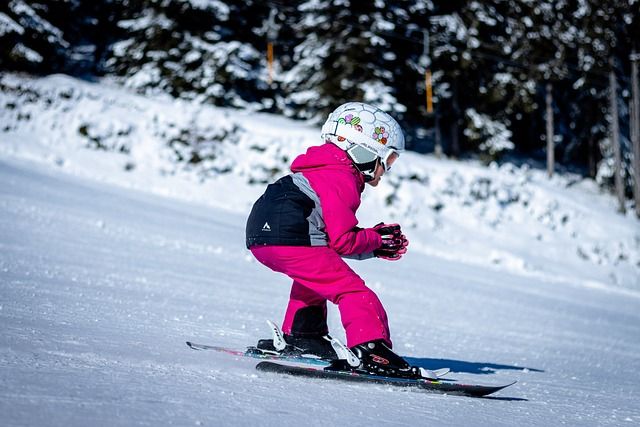
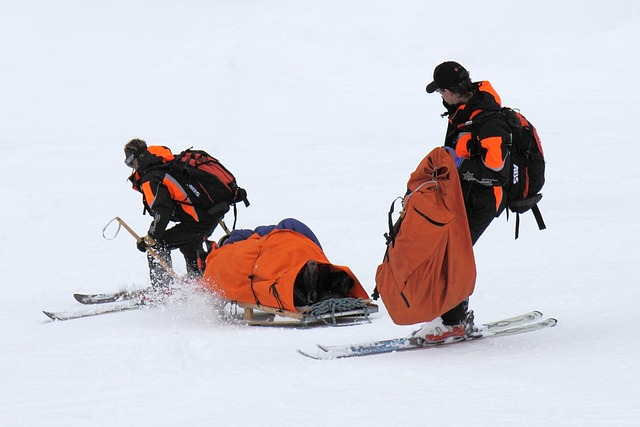
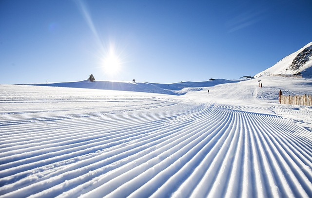

DESTINASJONER
REGLER
UTSTYR
OFFPIST
FJELLVETTREGLENE
1. Planlegg turen og meld fra hvor du går
2. Tilpass turen etter evne og forhold
3. Ta hensyn til vær- og skredvarsel
4. Vær forberedt på uvær og kulde, selv på korte turer
5. Ta med nødvendig utstyr for å kunne hjelpe deg selv og andre
6. Ta trygge veivalg. Gjenkjenn skredfarlig terreng og usikker is
7. Bruk kart og kompass. Vit alltid hvor du er
8. Vend i tide, det er ingen skam å snu
9. Spar på kreftene og søk ly om nødvendig
ALPINVETTREGLENE
1. Ansvar for å unngå skade
2. Avpass farten etter forholdene
3. Vikeplikt. Hvis du kommer bakfra, har du ansvar for å kjøre på en slik måte at du ikke utsetter andre for kollisjon
4. Forbikjøring og utforkjøring.
5. Starte, kjøre inn eller svinge oppover i nedfarten
6. Stopp i nedfarten
7. Er du til fots, må du kun benytte ytterkantene av bakken.
8. Respekter skilt og markeringer. Følg skilting, merking og anvisninger
9. Ved skader har enhver skiløper eller snowboarder plikt til å hjelpe.
10. Ved skader og ulykker har vitner og medvirkende plikter å oppgi personalia.
  